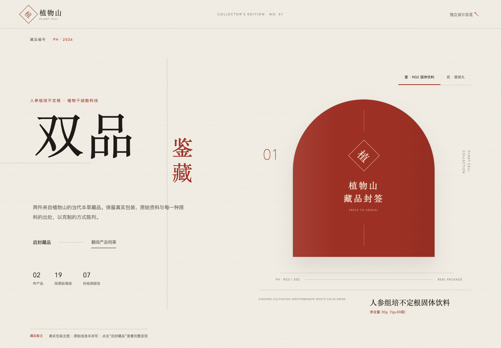
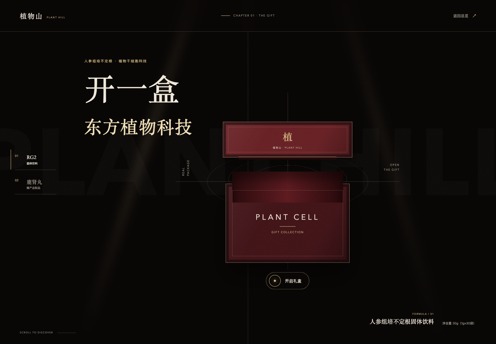
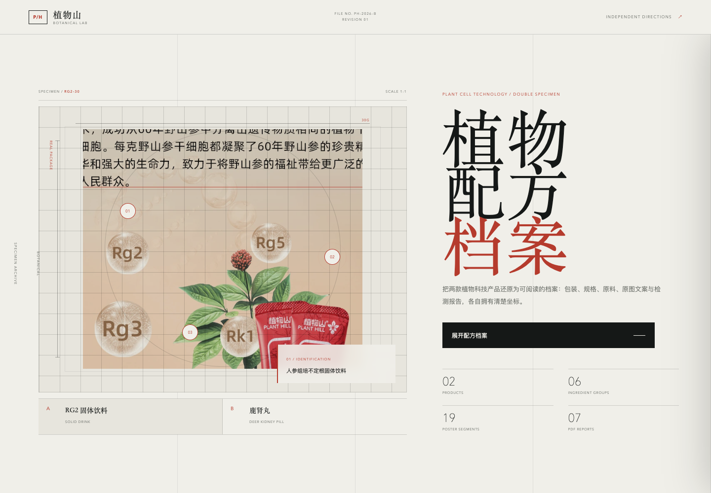

三套独立设计 · 同一份产品事实
不换皮，
换一种理解产品的方式。
全部设计只依据压缩包里的包装、长图、原料照片、代言素材与检测报告。三套分别采用不同的构图、字体、信息顺序和交互逻辑。
01 — 03
OPEN PREVIEW ↗
01
EDITORIAL MUSEUM
东方藏品
把产品当作可鉴藏的当代本草。宣纸色、朱砂印、拱形展柜和非对称编辑排版，语气安静、克制、有收藏感。
- 纸本编辑排版
- 拱形藏品展柜
- 抽签式启封交互

OPEN PREVIEW ↗
02
CINEMATIC GIFT THEATRE
夜宴礼匣
从东方漆盒和舞台灯光里提取视觉语言。整屏仪式感、双产品对开页面、独立侧边章节和无卡片式产品剧场。
- 黑漆礼盒主舞台
- 沉浸式双联产品页
- 金色粒子启盒反馈

OPEN PREVIEW ↗
03
BOTANICAL SPECIMEN ARCHIVE
本草档案
把植物干细胞科技变成可阅读的标本档案。技术网格、测量线、编号、热区注释和产品情报抽屉，理性但不冷。
- 标本测量台视觉
- 包装热区注释
- 产品情报抽屉
三套均提供独立的手机布局，以上并非桌面版缩放。